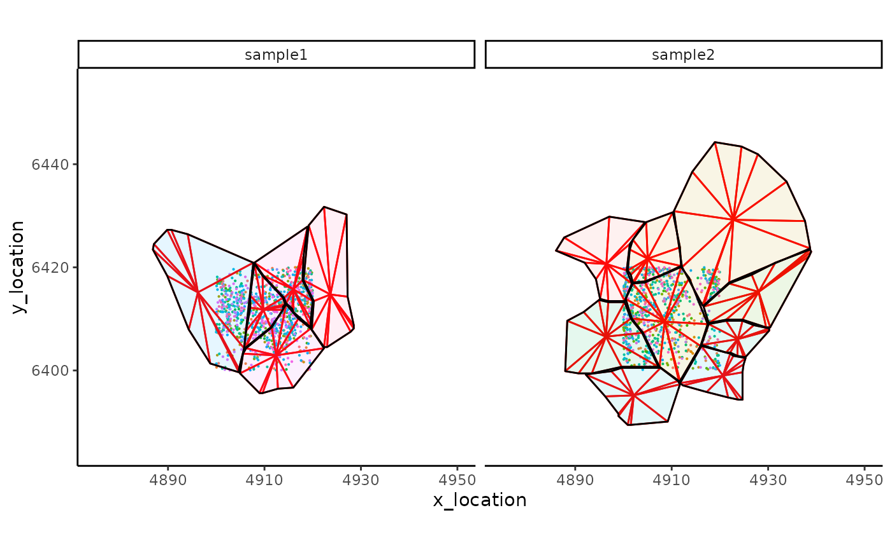
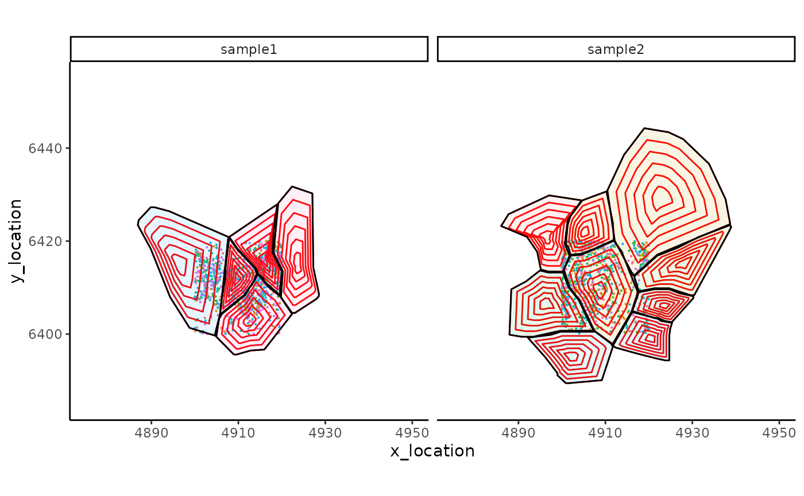
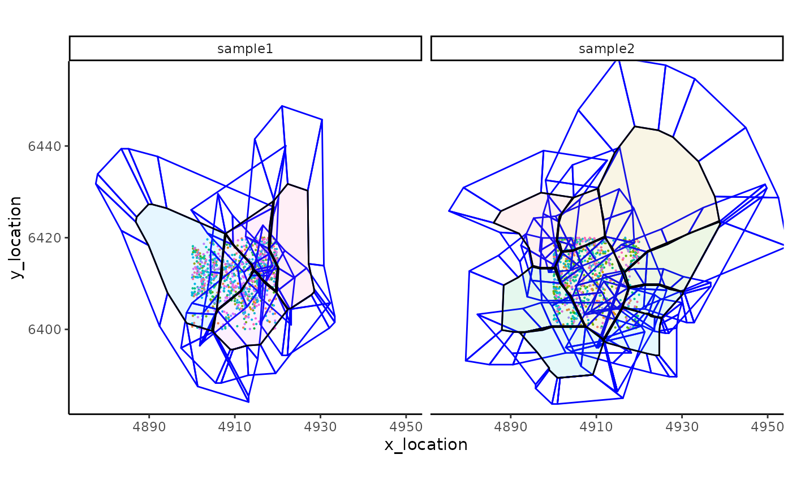
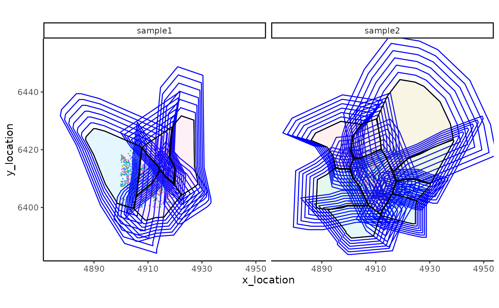

An introduction to the SpatialFeatures Package
Guan Gui, Shila Ghazanfar
School of Mathematics and Statistics, The University of Sydney, Sydney, NSW, 2006, AustraliaCharles Perkins Centre, The University of Sydney, Sydney, NSW, 2006, AustraliaSydney Precision Data Science Centre, The University of Sydney, Sydney, NSW, 2006, AustraliaSpatialFeatures.RmdSpatialFeatures
The R package SpatialFeatures contains functions to
extract features from molecule-resolved spatial transcriptomics data
using objects from the MoleculeExperiment class.
Create Example Dataset
Load an example MoleculeExperiment object with Xenium
data:
repoDir <- system.file("extdata", package = "MoleculeExperiment")
repoDir <- paste0(repoDir, "/xenium_V1_FF_Mouse_Brain")
me <- readXenium(repoDir, keepCols = "essential")
me
#> MoleculeExperiment class
#>
#> molecules slot (1): detected
#> - detected:
#> samples (2): sample1 sample2
#> -- sample1:
#> ---- features (137): 2010300C02Rik Acsbg1 ... Zfp536 Zfpm2
#> ---- molecules (962)
#> ---- location range: [4900,4919.98] x [6400.02,6420]
#> -- sample2:
#> ---- features (143): 2010300C02Rik Acsbg1 ... Zfp536 Zfpm2
#> ---- molecules (777)
#> ---- location range: [4900.01,4919.98] x [6400.16,6419.97]
#>
#>
#> boundaries slot (1): cell
#> - cell:
#> samples (2): sample1 sample2
#> -- sample1:
#> ---- segments (5): 67500 67512 67515 67521 67527
#> -- sample2:
#> ---- segments (9): 65043 65044 ... 65070 65071Quick start
The spatialFeatures function performs three key
steps
se = spatialFeatures(me)
se
#> class: SummarizedExperiment
#> dim: 712 14
#> metadata(0):
#> assays(1): spatialFeatures
#> rownames(712): sub_sector_2010300C02Rik sub_sector_Acsbg1 ...
#> super_concentric_Zfp536 super_concentric_Zfpm2
#> rowData names(2): FeatureCategory FeatureGene
#> colnames(14): sample1.67500 sample1.67512 ... sample2.65070
#> sample2.65071
#> colData names(5): Cell Sample_id x_central y_central boundariesStep-by-step SpatialFeatures
Generate new boundaries based on subcellular and supercellular features
This function loadBoundaries(me) processes the given
data (me) and returns feature data based on multiple assay
types, including: - Sub-Sector - Sub-Concentric - Super-Sector -
Super-Concentric
me <- SpatialFeatures::loadBoundaries(me)
me
#> MoleculeExperiment class
#>
#> molecules slot (1): detected
#> - detected:
#> samples (2): sample1 sample2
#> -- sample1:
#> ---- features (137): 2010300C02Rik Acsbg1 ... Zfp536 Zfpm2
#> ---- molecules (962)
#> ---- location range: [4900,4919.98] x [6400.02,6420]
#> -- sample2:
#> ---- features (143): 2010300C02Rik Acsbg1 ... Zfp536 Zfpm2
#> ---- molecules (777)
#> ---- location range: [4900.01,4919.98] x [6400.16,6419.97]
#>
#>
#> boundaries slot (5): cell sub_sector sub_concentric super_sector
#> super_concentric
#> - cell:
#> samples (2): sample1 sample2
#> -- sample1:
#> ---- segments (5): 67500 67512 67515 67521 67527
#> -- sample2:
#> ---- segments (9): 65043 65044 ... 65070 65071
#> - sub_sector:
#> samples (2): sample1 sample2
#> -- sample1:
#> ---- segments (60): 67500_01 67500_02 ... 67527_11 67527_12
#> -- sample2:
#> ---- segments (108): 65043_01 65043_02 ... 65071_11 65071_12
#> - sub_concentric:
#> samples (2): sample1 sample2
#> -- sample1:
#> ---- segments (30): 67500_01 67500_02 ... 67527_05 67527_06
#> -- sample2:
#> ---- segments (54): 65043_01 65043_02 ... 65071_05 65071_06
#> - super_sector:
#> samples (2): sample1 sample2
#> -- sample1:
#> ---- segments (55): 67500_01 67500_02 ... 67527_10 67527_11
#> -- sample2:
#> ---- segments (99): 65043_01 65043_02 ... 65071_10 65071_11
#> - super_concentric:
#> samples (2): sample1 sample2
#> -- sample1:
#> ---- segments (35): 67500_01 67500_02 ... 67527_06 67527_07
#> -- sample2:
#> ---- segments (63): 65043_01 65043_02 ... 65071_06 65071_07Draw the Feature Boundary Plots
Visualize the spatial molecule and cell boundary map with SpatialFeature boundaries.
ggplot_me() +
# add molecule points and colour by feature name
geom_point_me(me, byColour = "feature_id", size = 0.1) +
# add nuclei segments and colour the border with red
geom_polygon_me(me, assayName = "sub_sector", fill = NA, colour = "red") +
# add cell segments and colour by cell id
geom_polygon_me(me, byFill = "segment_id", colour = "black", alpha = 0.1) +
# zoom in to selected patch area
coord_cartesian(xlim = c(4875, 4950), ylim = c(6385, 6455))
ggplot_me() +
# add molecule points and colour by feature name
geom_point_me(me, byColour = "feature_id", size = 0.1) +
# add nuclei segments and colour the border with red
geom_polygon_me(me, assayName = "sub_concentric", fill = NA, colour = "red") +
# add cell segments and colour by cell id
geom_polygon_me(me, byFill = "segment_id", colour = "black", alpha = 0.1) +
# zoom in to selected patch area
coord_cartesian(xlim = c(4875, 4950), ylim = c(6385, 6455))
ggplot_me() +
# add molecule points and colour by feature name
geom_point_me(me, byColour = "feature_id", size = 0.1) +
# add nuclei segments and colour the border with red
geom_polygon_me(me, assayName = "super_sector", fill = NA, colour = "blue") +
# add cell segments and colour by cell id
geom_polygon_me(me, byFill = "segment_id", colour = "black", alpha = 0.1) +
# zoom in to selected patch area
coord_cartesian(xlim = c(4875, 4950), ylim = c(6385, 6455))
ggplot_me() +
# add molecule points and colour by feature name
geom_point_me(me, byColour = "feature_id", size = 0.1) +
# add nuclei segments and colour the border with red
geom_polygon_me(me, assayName = "super_concentric", fill = NA, colour = "blue") +
# add cell segments and colour by cell id
geom_polygon_me(me, byFill = "segment_id", colour = "black", alpha = 0.1) +
# zoom in to selected patch area
coord_cartesian(xlim = c(4875, 4950), ylim = c(6385, 6455))
Create Entropy Matrix
This function EntropyMatrix() computes the entropy of a
counts matrix from a MoleculeExperiment object based on the
given assay type.
ent = SpatialFeatures::EntropyMatrix(me, c("sub_sector", "sub_concentric", "super_sector", "super_concentric"), nCores = 1)
lapply(ent, head, n = 4)
#> $sub_sector
#> sample1.67500 sample1.67512 sample1.67515 sample1.67521
#> 2010300C02Rik 0.5623351 0.6931472 0.6365142 0.6931472
#> Acsbg1 0.6931472 0.6931472 0.6931472 0.0000000
#> Adamts2 0.0000000 0.0000000 0.0000000 0.0000000
#> Adamtsl1 0.0000000 0.0000000 0.0000000 0.0000000
#> sample1.67527 sample2.65043 sample2.65044 sample2.65051
#> 2010300C02Rik 0 0 0 0.0000000
#> Acsbg1 0 0 0 0.6931472
#> Adamts2 0 0 0 0.0000000
#> Adamtsl1 0 0 0 0.0000000
#> sample2.65055 sample2.65063 sample2.65064 sample2.65067
#> 2010300C02Rik 1.5498260 0 0.6931472 0
#> Acsbg1 0.6931472 0 0.0000000 0
#> Adamts2 0.0000000 0 0.0000000 0
#> Adamtsl1 0.0000000 0 0.0000000 0
#> sample2.65070 sample2.65071
#> 2010300C02Rik 0 0.0000000
#> Acsbg1 0 0.6931472
#> Adamts2 0 0.0000000
#> Adamtsl1 0 0.0000000
#>
#> $sub_concentric
#> sample1.67500 sample1.67512 sample1.67515 sample1.67521
#> 2010300C02Rik 0.5623351 0.6931472 0.6365142 0
#> Acsbg1 0.6931472 0.0000000 0.6931472 0
#> Adamts2 0.0000000 0.0000000 0.0000000 0
#> Adamtsl1 0.0000000 0.0000000 0.0000000 0
#> sample1.67527 sample2.65043 sample2.65044 sample2.65051
#> 2010300C02Rik 0 0 0 0
#> Acsbg1 0 0 0 0
#> Adamts2 0 0 0 0
#> Adamtsl1 0 0 0 0
#> sample2.65055 sample2.65063 sample2.65064 sample2.65067
#> 2010300C02Rik 1.2770343 0 0.6931472 0
#> Acsbg1 0.6931472 0 0.0000000 0
#> Adamts2 0.0000000 0 0.0000000 0
#> Adamtsl1 0.0000000 0 0.0000000 0
#> sample2.65070 sample2.65071
#> 2010300C02Rik 0 0
#> Acsbg1 0 0
#> Adamts2 0 0
#> Adamtsl1 0 0
#>
#> $super_sector
#> sample1.67500 sample1.67512 sample1.67515 sample1.67521
#> 2010300C02Rik 0 1.332179 0.6931472 0.6931472
#> Acsbg1 0 0.000000 0.6931472 0.6931472
#> Adamts2 0 0.000000 0.0000000 0.0000000
#> Adamtsl1 0 0.000000 0.0000000 0.0000000
#> sample1.67527 sample2.65043 sample2.65044 sample2.65051
#> 2010300C02Rik 0 0.5623351 1.039721 0.5982696
#> Acsbg1 0 0.0000000 0.000000 0.9502705
#> Adamts2 0 0.0000000 0.000000 0.0000000
#> Adamtsl1 0 0.0000000 0.000000 0.0000000
#> sample2.65055 sample2.65063 sample2.65064 sample2.65067
#> 2010300C02Rik 0.000000 0.6931472 0 0.0000000
#> Acsbg1 1.559581 1.0114043 0 0.6931472
#> Adamts2 0.000000 0.0000000 0 0.0000000
#> Adamtsl1 0.000000 0.0000000 0 0.0000000
#> sample2.65070 sample2.65071
#> 2010300C02Rik 0.0000000 0.0000000
#> Acsbg1 0.5623351 0.6365142
#> Adamts2 0.0000000 0.0000000
#> Adamtsl1 0.0000000 0.0000000
#>
#> $super_concentric
#> sample1.67500 sample1.67512 sample1.67515 sample1.67521
#> 2010300C02Rik 1.5607104 1.05492 0.6931472 0.0000000
#> Acsbg1 0.6931472 0.00000 0.6931472 0.6931472
#> Adamts2 0.0000000 0.00000 0.0000000 0.0000000
#> Adamtsl1 0.0000000 0.00000 0.0000000 0.0000000
#> sample1.67527 sample2.65043 sample2.65044 sample2.65051
#> 2010300C02Rik 0.0000000 1.039721 1.386294 1.549826
#> Acsbg1 0.6931472 0.000000 0.000000 1.054920
#> Adamts2 0.0000000 0.000000 0.000000 0.000000
#> Adamtsl1 0.0000000 0.000000 0.000000 0.000000
#> sample2.65055 sample2.65063 sample2.65064 sample2.65067
#> 2010300C02Rik 0.6931472 0.6931472 1.386294 0.0000000
#> Acsbg1 1.3208883 1.3296613 0.000000 0.6931472
#> Adamts2 0.0000000 0.0000000 0.000000 0.0000000
#> Adamtsl1 0.0000000 0.0000000 0.000000 0.0000000
#> sample2.65070 sample2.65071
#> 2010300C02Rik 0.6931472 0.0000000
#> Acsbg1 0.6931472 0.6365142
#> Adamts2 0.0000000 0.0000000
#> Adamtsl1 0.0000000 0.0000000Create SummarizedExperiment Object
This function EntropySummarizedExperiment() Convert the
entropy matrix into a SummarizedExperiment object.
se = SpatialFeatures::EntropySummarizedExperiment(ent, me)
se
#> class: SummarizedExperiment
#> dim: 712 14
#> metadata(0):
#> assays(1): spatialFeatures
#> rownames(712): sub_sector_2010300C02Rik sub_sector_Acsbg1 ...
#> super_concentric_Zfp536 super_concentric_Zfpm2
#> rowData names(2): FeatureCategory FeatureGene
#> colnames(14): sample1.67500 sample1.67512 ... sample2.65070
#> sample2.65071
#> colData names(5): Cell Sample_id x_central y_central boundariesIf you also want the gene counts, you can include the parameter
se = EntropySummarizedExperiment(ent, me, includeCounts = TRUE)
se
#> class: SummarizedExperiment
#> dim: 890 14
#> metadata(0):
#> assays(1): spatialFeatures
#> rownames(890): sub_sector_2010300C02Rik sub_sector_Acsbg1 ...
#> genecount_Zfp536 genecount_Zfpm2
#> rowData names(2): FeatureCategory FeatureGene
#> colnames(14): sample1.67500 sample1.67512 ... sample2.65070
#> sample2.65071
#> colData names(5): Cell Sample_id x_central y_central boundariesInspect the SpatialFeatures SummarizedExperiment Object
Check the structure and content of the SummarizedExperiment object:
se
#> class: SummarizedExperiment
#> dim: 890 14
#> metadata(0):
#> assays(1): spatialFeatures
#> rownames(890): sub_sector_2010300C02Rik sub_sector_Acsbg1 ...
#> genecount_Zfp536 genecount_Zfpm2
#> rowData names(2): FeatureCategory FeatureGene
#> colnames(14): sample1.67500 sample1.67512 ... sample2.65070
#> sample2.65071
#> colData names(5): Cell Sample_id x_central y_central boundaries
colData(se)
#> DataFrame with 14 rows and 5 columns
#> Cell Sample_id x_central y_central
#> <character> <character> <numeric> <numeric>
#> sample1.67500 sample1.67500 sample1 4896.19 6415.14
#> sample1.67512 sample1.67512 sample1 4909.74 6411.80
#> sample1.67515 sample1.67515 sample1 4912.42 6402.93
#> sample1.67521 sample1.67521 sample1 4916.01 6415.75
#> sample1.67527 sample1.67527 sample1 4923.68 6414.74
#> ... ... ... ... ...
#> sample2.65063 sample2.65063 sample2 4928.03 6415.25
#> sample2.65064 sample2.65064 sample2 4896.37 6406.56
#> sample2.65067 sample2.65067 sample2 4923.71 6406.08
#> sample2.65070 sample2.65070 sample2 4902.14 6395.17
#> sample2.65071 sample2.65071 sample2 4920.63 6398.99
#> boundaries
#> <AsIs>
#> sample1.67500 4896.85:6413.46,4895.15:6413.89,4894.30:6417.71
#> sample1.67512 4901.95:6417.07,4901.52:6418.56,4900.89:6419.41
#> sample1.67515 4916.40:6412.61,4912.15:6420.05,4910.45:6430.89
#> sample1.67521 4911.51:6397.95,4907.48:6400.71,4904.07:6407.30
#> sample1.67527 4929.57:6408.36,4924.69:6409.85,4921.29:6409.85
#> ... ...
#> sample2.65063 4904.71:6399.65,4898.76:6401.35,4894.30:6407.94
#> sample2.65064 4905.77:6404.11,4906.20:6407.73,4907.05:6412.19
#> sample2.65067 4908.96:6395.61,4904.93:6399.44,4905.56:6403.26
#> sample2.65070 4919.59:6408.36,4915.98:6411.34,4915.76:6411.98
#> sample2.65071 4922.35:6404.54,4919.80:6407.94,4920.23:6413.46
rowData(se)
#> DataFrame with 890 rows and 2 columns
#> FeatureCategory FeatureGene
#> <character> <character>
#> sub_sector_2010300C02Rik Subcellular 2010300C02Rik
#> sub_sector_Acsbg1 Subcellular Acsbg1
#> sub_sector_Adamts2 Subcellular Adamts2
#> sub_sector_Adamtsl1 Subcellular Adamtsl1
#> sub_sector_Adgrl4 Subcellular Adgrl4
#> ... ... ...
#> genecount_Vip Genecount Vip
#> genecount_Vwc2l Genecount Vwc2l
#> genecount_Wfs1 Genecount Wfs1
#> genecount_Zfp536 Genecount Zfp536
#> genecount_Zfpm2 Genecount Zfpm2Finish
sessionInfo()
#> R version 4.4.1 (2024-06-14)
#> Platform: x86_64-pc-linux-gnu
#> Running under: Ubuntu 22.04.4 LTS
#>
#> Matrix products: default
#> BLAS: /usr/lib/x86_64-linux-gnu/openblas-pthread/libblas.so.3
#> LAPACK: /usr/lib/x86_64-linux-gnu/openblas-pthread/libopenblasp-r0.3.20.so; LAPACK version 3.10.0
#>
#> locale:
#> [1] LC_CTYPE=C.UTF-8 LC_NUMERIC=C LC_TIME=C.UTF-8
#> [4] LC_COLLATE=C.UTF-8 LC_MONETARY=C.UTF-8 LC_MESSAGES=C.UTF-8
#> [7] LC_PAPER=C.UTF-8 LC_NAME=C LC_ADDRESS=C
#> [10] LC_TELEPHONE=C LC_MEASUREMENT=C.UTF-8 LC_IDENTIFICATION=C
#>
#> time zone: UTC
#> tzcode source: system (glibc)
#>
#> attached base packages:
#> [1] parallel stats4 stats graphics grDevices utils datasets
#> [8] methods base
#>
#> other attached packages:
#> [1] ggplot2_3.5.1 SpatialFeatures_0.0.1
#> [3] purrr_1.0.2 dplyr_1.1.4
#> [5] SummarizedExperiment_1.34.0 Biobase_2.64.0
#> [7] GenomicRanges_1.56.1 GenomeInfoDb_1.40.1
#> [9] IRanges_2.38.1 S4Vectors_0.42.1
#> [11] BiocGenerics_0.50.0 MatrixGenerics_1.16.0
#> [13] matrixStats_1.3.0 MoleculeExperiment_1.4.1
#> [15] BiocStyle_2.32.1
#>
#> loaded via a namespace (and not attached):
#> [1] tidyselect_1.2.1 EBImage_4.46.0
#> [3] farver_2.1.2 bitops_1.0-8
#> [5] fastmap_1.2.0 SingleCellExperiment_1.26.0
#> [7] RCurl_1.98-1.16 digest_0.6.36
#> [9] lifecycle_1.0.4 terra_1.7-78
#> [11] magrittr_2.0.3 compiler_4.4.1
#> [13] rlang_1.1.4 sass_0.4.9
#> [15] tools_4.4.1 utf8_1.2.4
#> [17] yaml_2.3.10 data.table_1.15.4
#> [19] knitr_1.48 labeling_0.4.3
#> [21] S4Arrays_1.4.1 htmlwidgets_1.6.4
#> [23] bit_4.0.5 DelayedArray_0.30.1
#> [25] abind_1.4-5 BiocParallel_1.38.0
#> [27] withr_3.0.0 desc_1.4.3
#> [29] grid_4.4.1 fansi_1.0.6
#> [31] colorspace_2.1-1 scales_1.3.0
#> [33] cli_3.6.3 rmarkdown_2.27
#> [35] crayon_1.5.3 ragg_1.3.2
#> [37] generics_0.1.3 httr_1.4.7
#> [39] rjson_0.2.21 cachem_1.1.0
#> [41] zlibbioc_1.50.0 BiocManager_1.30.23
#> [43] XVector_0.44.0 tiff_0.1-12
#> [45] vctrs_0.6.5 Matrix_1.7-0
#> [47] jsonlite_1.8.8 bookdown_0.40
#> [49] fftwtools_0.9-11 bit64_4.0.5
#> [51] systemfonts_1.1.0 jpeg_0.1-10
#> [53] magick_2.8.4 locfit_1.5-9.10
#> [55] jquerylib_0.1.4 glue_1.7.0
#> [57] pkgdown_2.1.0 codetools_0.2-20
#> [59] gtable_0.3.5 UCSC.utils_1.0.0
#> [61] munsell_0.5.1 tibble_3.2.1
#> [63] pillar_1.9.0 htmltools_0.5.8.1
#> [65] GenomeInfoDbData_1.2.12 R6_2.5.1
#> [67] textshaping_0.4.0 evaluate_0.24.0
#> [69] lattice_0.22-6 highr_0.11
#> [71] png_0.1-8 SpatialExperiment_1.14.0
#> [73] bslib_0.8.0 Rcpp_1.0.13
#> [75] SparseArray_1.4.8 xfun_0.46
#> [77] fs_1.6.4 pkgconfig_2.0.3